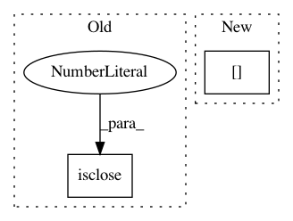

b1a427bb3849d998230ca8b8b1caf7fc3095d99e,liegroups/numpy.py,SO2,is_valid_matrix,#Any#Any#,29
Before Change
@classmethod
def is_valid_matrix(cls, mat):
return mat.shape == (cls.dim, cls.dim) and \
np.isclose(np.linalg.det(mat), 1.) and \
np.allclose(mat.T.dot(mat), np.identity(cls.dim))
@classmethod
After Change
bottom_row = np.append(np.zeros(cls.dim - 1), 1.)
return mat.shape == (cls.dim, cls.dim) and \
np.array_equal(mat[cls.dim - 1, :], bottom_row) and \
cls.RotationType.is_valid_matrix(mat[0:cls.dim - 1, 0:cls.dim - 1])
@classmethod
In pattern: SUPERPATTERN
Frequency: 3
Non-data size: 2
Instances
Project Name: utiasSTARS/liegroups
Commit Name: b1a427bb3849d998230ca8b8b1caf7fc3095d99e
Time: 2017-10-10
Author: clement.leopold@gmail.com
File Name: liegroups/numpy.py
Class Name: SO2
Method Name: is_valid_matrix
Project Name: scikit-learn-contrib/DESlib
Commit Name: 0e17f47e9a4920e276bb61b60d6de16264bc6bcf
Time: 2017-12-29
Author: rafaelmenelau@gmail.com
File Name: pythonds/util/prob_functions.py
Class Name:
Method Name: ccprmod
Project Name: biocore/scikit-bio
Commit Name: 4feae93f666dfdb7ede5665160d9775189908479
Time: 2015-03-31
Author: jamietmorton@gmail.com
File Name: skbio/stats/composition.py
Class Name:
Method Name: multiplicative_replacement